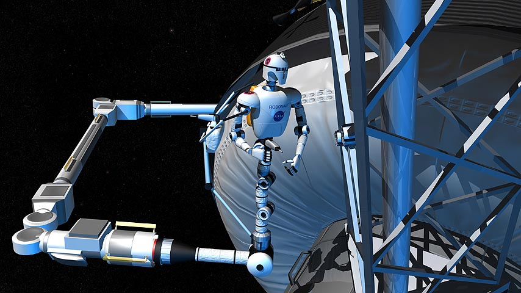
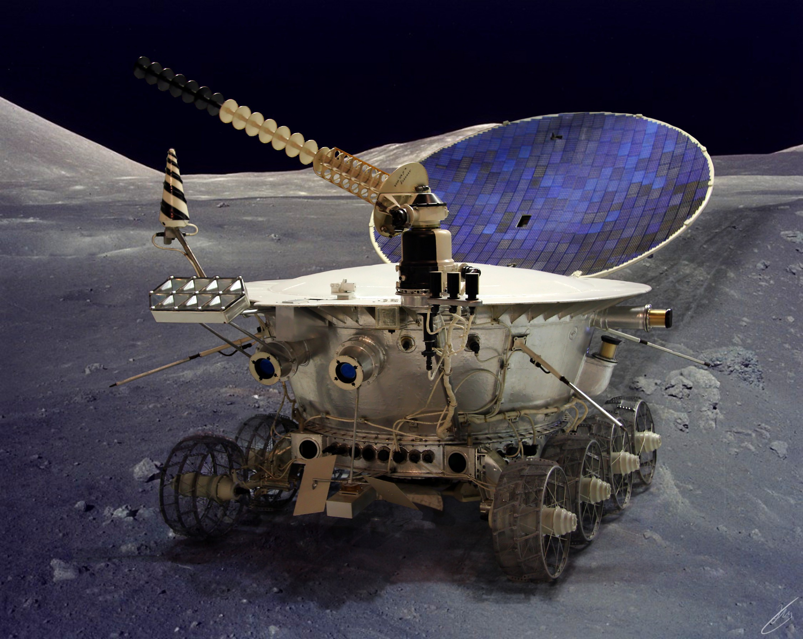
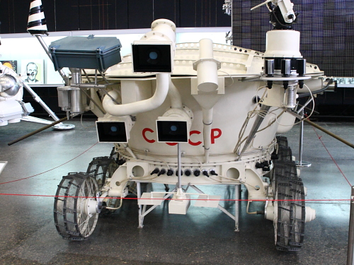
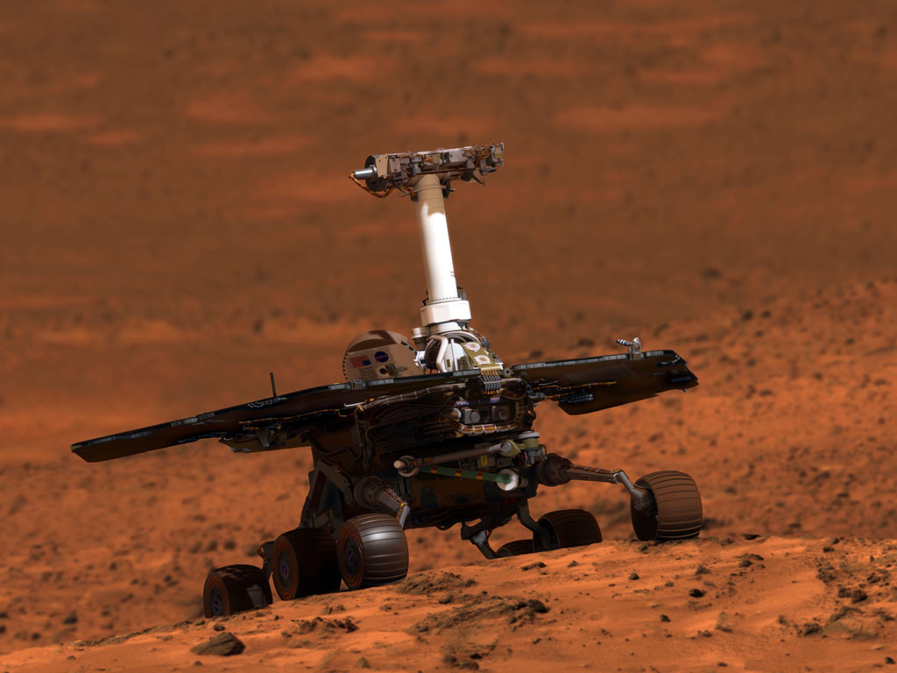

Применение роботов в космосе
В настоящее время роботы стали неотъемлемой частью производства, высвобождая человека в его трудовой деятельности. Космос является одной из областей применения автоматизированных и робототехнических систем в связи с высокой опасностью для человека открытого космоса.
Космороботы
Космороботы – это роботы, приспособленные работать в космическом пространстве. Преимущество космических роботов перед человеком заключается в том, что они могут работать в крайне неблагоприятных условиях (радиация) и обходиться без каких-либо ресурсов (например, топлива), так как в большинстве случаев они работают на солнечных батареях. Также гораздо легче будет пережить потерю такого робота, чем гибель астронавта.

Обычно, задача косморобота заключается в проведении какой-нибудь научной работы (например, собрать образцы грунта, просканировать их и отправить собранные данные учёным на Землю). Вообще-то, тоже самое может сделать и обычный робот, работающий на земной поверхности, но к космороботу есть несколько основных требований, которым он должен соответствовать.
Например:
- перенести запуск
- функционировать в сложных условиях враждебной среды
- весить как можно меньше
- потреблять мало энергии и иметь долгий срок службы
- работать в автоматическом режиме
- обладать чрезвычайной надежностью
Для того, чтобы соответствовать всем этим требованиям, учёные создают все новые и новые устройства, механизмы, приводы, микроконтроллеры, обладающие высокой прочностью и использующим как можно меньше энергии.
Телескоп «Хаббл» — совместный проект НАСА и Европейского космического агентства.
За 15 лет работы на околоземной орбите «Хаббл» получил более 1 миллиона изображений небесных объектов — звёзд, туманностей, галактик, планет. Поток данных, которые он ежемесячно генерирует в процессе наблюдений, составляет около 480 ГБ. Более 3900 астрономов получили возможность использовать его для наблюдений.
Луноходы
Луноход-1 – первый в мире дистанционно-управляемый самоходный аппарат, успешно работавший на Луне. Отправлен он туда был для изучения лунного грунта, а также для изучения радиоактивного и рентгеновского излучения. На поверхность луны он был доставлен 17 ноября 1970 года советской межпланетной станцией «Луна-17».
У каждого из его восьми колес был свой электродвигатель и свой тормоз, благодаря чему этот робот мог ездить не только вперед-назад, но и объезжать глубокие кратеры и небольшие скалы. В качестве приводов использовали электродвигатели в силу одной причины – другого «горючего» на Луне нет. Электричество косморобот брал из солнечной батареи, установленной у него на крышке приборного отсека. Мощность батареи была равна 180 ватт. Также в систему энергопитания лунохода входили химические буферные батареи. Вместо глаз у Лунохода-1 были телекамеры. В них было применено малокадровое телевидение с частотой смены картинки от 1 кадра в 4 секунды до 1 кадра в 20 секунд.
Луноход-1 проработал в 3 раза дольше запланированного срока, успев проехать 10540 метров, передав на Землю 211 панорам и около 25000 фотографий. Проработав чуть больше 301-го дня, он не вышел на связь с Землей в связи с выработкой изотопного источника теплоты, поддерживающего тепло внутри лунохода.
Луноход-2 - второй в мире дистанционно-управляемый самоходный аппарат. Он был разработан для фотосъёмки и видеосъёмки Луны, проведения экспериментов с наземным лазерным дальномером и прочих операций.
Технические характеристики были примерно такие же, как и лунохода-1. Но главным отличием Лунохода-2 от Лунохода-1 являлось наличие третьей телекамеры, установленной на уровне человеческих глаз, что позволяло смотреть намного дальше. Также у него увеличилась масса по сравнению со своим младшим собратом, и составила 836 килограмм.
При посадке у него была повреждена система навигации, из-за чего экипажу лунохода пришлось ориентироваться по Солнцу и по звездам. Проработал он почти 5 месяцев, за которые он успел преодолеть 37 километров, передал на Землю 86 панорам и около 80 000 кадров телесъёмки, после чего вышел из строя из-за перегрева аппаратуры внутри корпуса.
Марсоходы
Марсоходы «Спирит» и «Оппортьюнити» - аппараты-близнецы, успешно запущенные на Марс в 2004 году. Отправлены они были туда для одной цели – установить, была ли когда-нибудь на Марсе вода, или нет.
На марсоходах этого типа установлено 6 колес, каждое из которых имеет свой собственный электродвигатель. Для разворота марсоход поворачивает передние и задние колёса на нужный угол, разворачиваясь при этом практически «на месте». Телекамеры отдалены друг от друга примерно на расстояние глаз человека. Они фотографируют в разрешении 1024х1024 пикселя.
С помощью научного оборудования он берет образцы грунта, анализирует их и отправляет данные учёным. Также в них были установлены электронагреватели, которые поддерживали температуру, необходимую для работы робота. Дополнительно в них установлены радиоизотопные нагреватели, для работы при очень низких температурах.